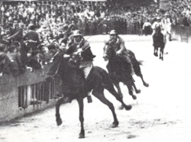
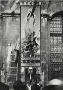

|
|
L'ordine è quello di entrata fra i canapi e il grassetto indica la vincitrice
In questo colore le contrade estratte a sorte
Cliccando sui nomi dei cavalli, su quelli dei fantini e sulle immagini, si apriranno le relative pagine
* Fantino esordiente
MOSSIERE: Guglielmo Ricci



Priore: Nello Mariani
Vicario: Tommaso Fondelli
Capitano: Sabatino Mori
Tenenti: Giorgio Bardini, Giulio Alessi, Alessandro Traballesi
Barbaresco: Benito Da Frassini detto Pinguino
La contrada non vinceva dal 16 agosto 1945
Il fantino non vinceva dal 16 agosto 1945

Il nono Palio straordinario del secolo viene corso in onore di Santa Caterina, questa dedica stimola a dovere l'Oca che può contare su Cesarino, cavallo esordiente velocissimo, che viene affidato ad Amaranto per la terza volta consecutiva col giubbetto di Fontebranda.
Favorita è comunque l'Aquila con Biondino su Piero, mentre nel Drago si ricompone la coppia Rubacuori-Folco, si dice un gran bene anche di un altro esordiente, Brillante che va nella Civetta che si affida all'ultimo momento al Biondo.
Dalla mossa scappa via prima la favorita Aquila tallonata dalla Civetta, l'Oca, partita di rincorsa, rinviene a velocità doppia verso il primo San Martino.
Amaranto non riesce a mantenere il controllo di Cesarino che cade morendo sul tufo, ne approfitta la Civetta che va in testa.
Nel frattempo al Casato l'Aquila passa la Civetta ma la successiva caduta del Biondino spiana la strada al Biondo. Per la Civetta è un facile trionfo, mentre secondo si piazza, molto staccato, il Drago.
Un'ultima curiosità, per la prima e la seconda prova nella Torre corre lo spazzino ocaiolo Ciambella, cose d'altri tempi...
(Da "Daccelo!" di Roberto Filiani)


|
|
|